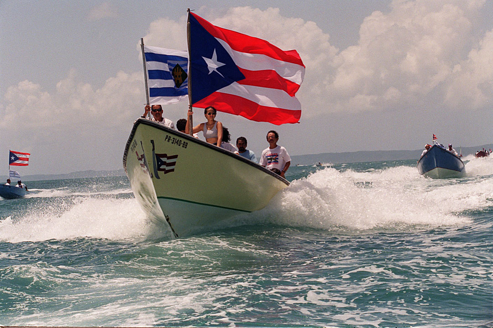
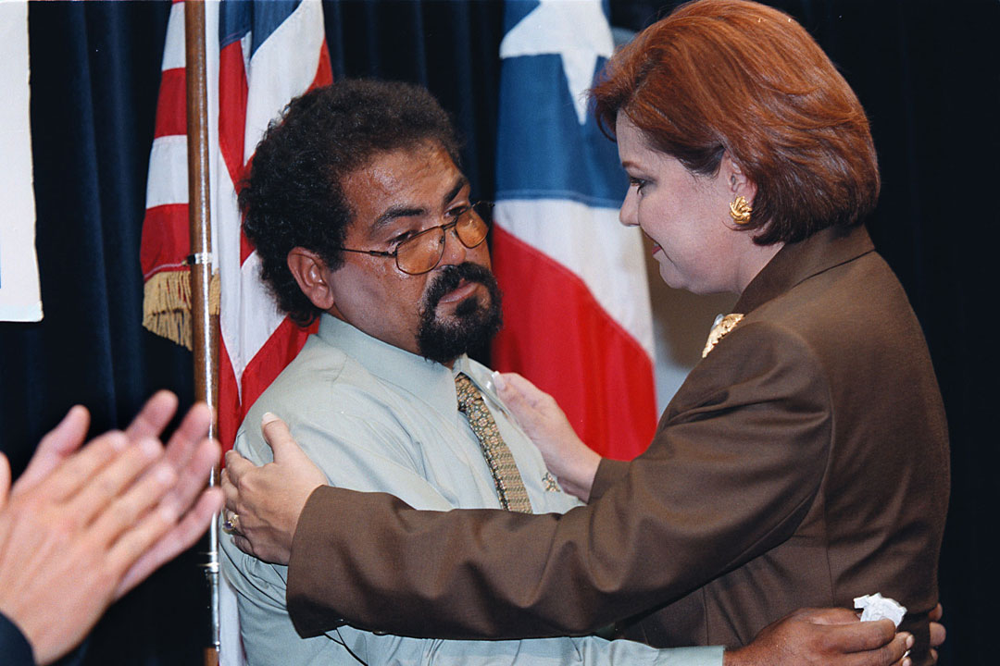
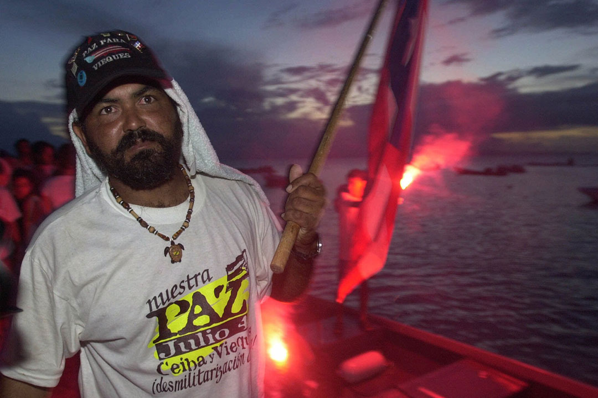
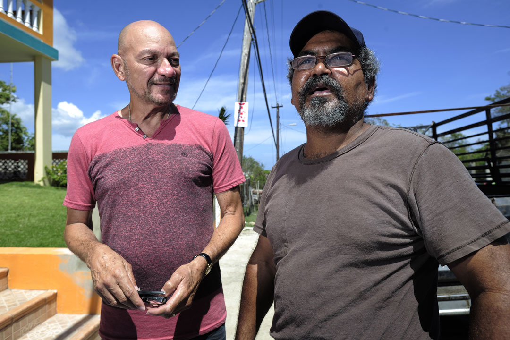
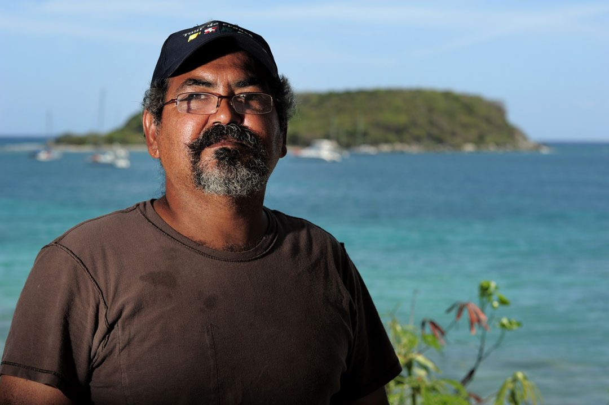

Pescadores, incluyendo a Carlos "Prieto"Ventura, viajan en sus lanchas hacia la marcha contra la Marina en Vieques el 4 de julio de 1999. CEIBA. (Archivo/ Carla Martínez)
Norma Burgos abraza a Carlos Ventura luego del informe especial sobre Vieques al entonces gobernador Pedro Roselló el 30 de junio de 1999. (Archivo)
Carlos "Prieto" Ventura y otros activistas regresa al puerto Isabela II el 4 de mayo de 2000 luego que las autoridades federales los dejaran ir. Unos 213 manifestantes fueron arrestados luego de una ocupación de un año del sitio de bombardeo de la Marina. (AP)
Nilos Adams, quien fue paciente de cáncer, junto al pescador y activista Carlos Ventura. (Carlos Giusti/ carlos.giusit@gfrmedia.com)
Carlos Ventura también fue miembro de la Comisión Especial de Vieques, presidente de la Asociación de Pescadores del Sur y representante de Organizaciones Cívicas de Vieques. (Carlos Giusti/ carlos.giusit@gfrmedia.com)